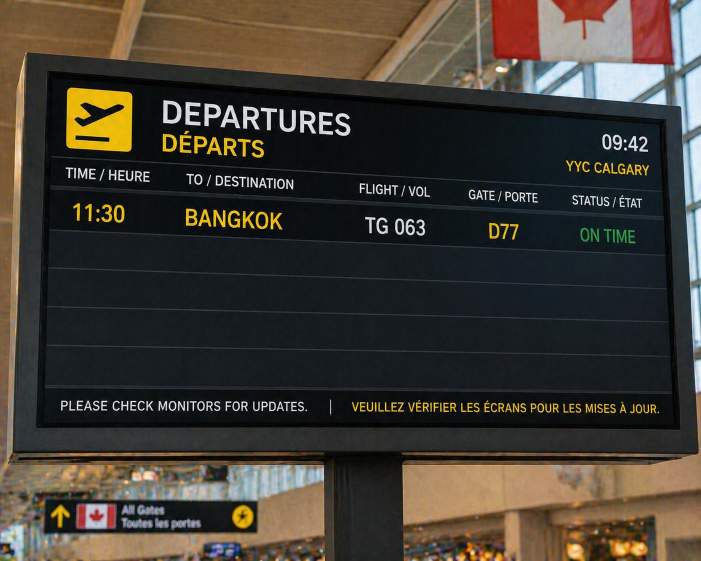
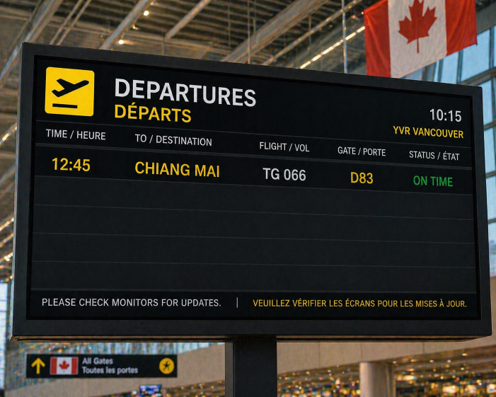

| Patricia carefully unfolded the note she had found inside the hidden compartment, her hands still slightly unsteady from the effort of opening it. The message was brief but clear—her uncle had travelled to Thailand, and whatever he was searching for was still there. She quickly grabbed the leatherbound notebook and flipped through the pages, scanning the maps and coded notes. Two locations appeared again and again: Bangkok and Chiang Mai. Both were marked with symbols she recognised from earlier clues, but neither gave a clear answer. It felt like her uncle had left the decision for her to make. | |
| She sat back on the edge of the bed, staring at the two names as her mind raced. Bangkok was busy, crowded, and full of hidden corners—perfect for someone trying to stay unnoticed. But Chiang Mai, with its mountains and quieter surroundings, matched some of the sketches and symbols more closely. Patricia knew she couldn’t choose randomly. Every step so far had required careful thinking, and this was no different. She closed the notebook slowly, realising that her next flight would determine whether she stayed on the right path—or lost the trail completely. |
 Fly to Bangkok |
 Fly to Chiang Mai |